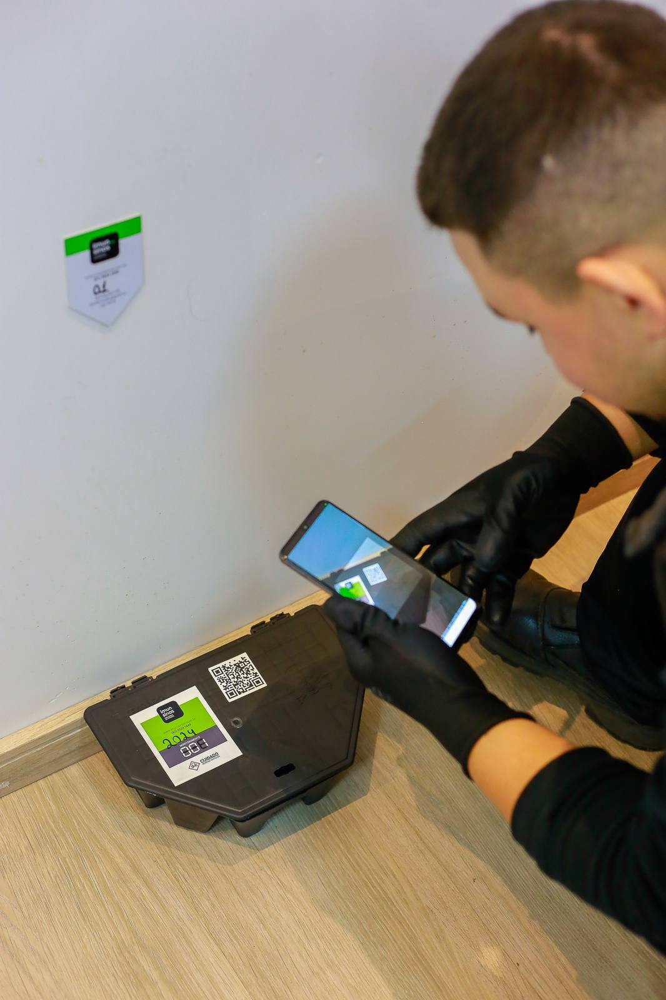
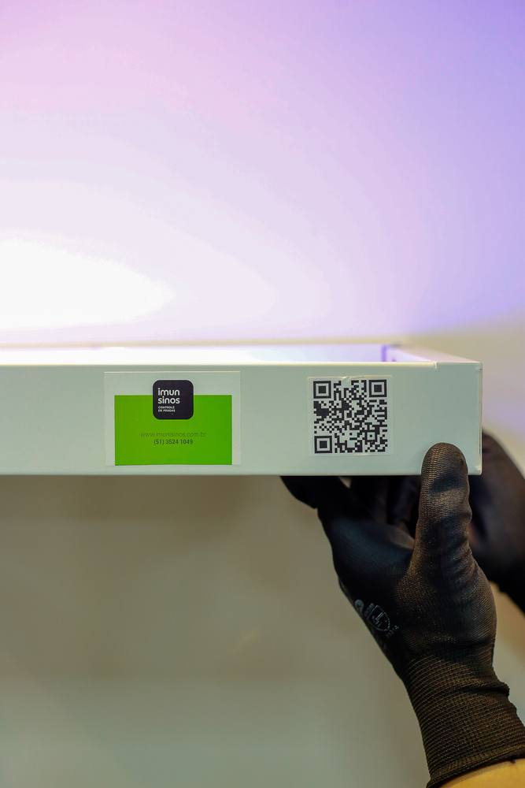

Empresa e indústria
Auditoria, alvará e cliente exigem comprovação. Relatório fotográfico e certificado em cada visita.
Campo Bom · Vale dos Sinos · Serra Gaúcha
Programa contínuo com visitas, monitoramento e relatórios. Ideal para empresa, indústria e casa que não quer viver de emergência.

Dedetizar uma vez resolve a infestação daquele mês. O CIP é um programa: inspeção, prevenção, iscas, visitas e documentação — para residência, comércio e indústria que precisam estar em dia o ano todo.
Auditoria, alvará e cliente exigem comprovação. Relatório fotográfico e certificado em cada visita.
Barata, rato e inseto voltam pelo entorno. Monitoramento contínuo corta o ciclo.
Quem já teve infestação repetida gasta menos prevenindo do que chamando emergência toda hora.
Plano personalizado depois da inspeção. Pagamento por mensalidade. Atendimento em até 24 horas se aparecer incidente entre as visitas.
Avaliação do ambiente, espécies presentes e pontos vulneráveis. Orientação para evitar entrada e proliferação.
Depois de cada vistoria você recebe relatório. Fotos dos pontos críticos e indicações de melhoria.

Conta o tipo de ambiente (casa, comércio, indústria) e a cidade. Orçamento é personalizado.
A equipe mapeia riscos e espécies. Daí sai o plano de visitas e os pontos de monitoramento.
Iscas, armadilhas e controle químico conforme o plano. Ajuste quando o ambiente muda.
Documentação após cada vistoria. Se aparecer incidente entre visitas, o suporte responde em até 24 horas.

Sócio-gestor · mais de 15 anos na operação.

Sócia-gestora · atendimento e gestão da empresa.
Não. Dedetização pontual trata a infestação daquele momento. CIP é programa contínuo: visitas, monitoramento, relatórios e prevenção o ano todo.
Mensalidade personalizada conforme o ambiente e a frequência das visitas. A equipe monta o plano depois da inspeção. Chame no WhatsApp.
Serve para os dois. Residências com reincidência, comércios, condomínios e indústrias que precisam de documentação.
Suporte em até 24 horas em caso de incidente, dentro do programa.
Diz o tipo de ambiente e a cidade. A equipe da Imunisinos propõe frequência, pontos e valor.
Quero orçamento no WhatsApp